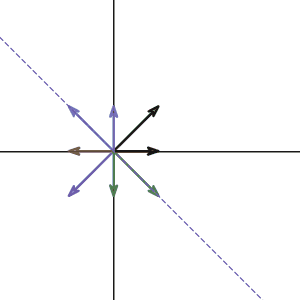

So far, we have been working on many matrices. We also learned that the cool notation “matrix” can describe a lot of things: linear equations, transformation, rotation, change the basis… We can rely on matrix to do a lot of calculation that couldn’t be done or hard to describe before. However, in real life, even if we use the matrix to cheat, the questions can still be really hard and tedious. In this chapter, we will be focusing on ONE way to make our life easier. Also, it turns out, this specific method has a huge impact on many many area.
Our main character has a German name: Eigen. It is not because the guy who invent this is a German, but because David Hilbert, a German mathematician gave him this classic German name. From then, everyone start calling him this.
Although this idea is first arose in the study of quadratic forms and differential equations, we are not going to take that approach. Instead, let’s first define what it is, and then see what can this bad boy do.
So let’s look at an example matrix:
If we treat this matrix as a transformation, applying this transformation on any 2d vector will give you another 2d vector. But this is not a new story, we did this before a billion times. What is interesting is that for some vectors in 2d space, their direction will not change after the transformation. What does that mean algebraically? Assume for some vector \(\pmb{x}\), we have the relation:
Where \(\lambda\) is some non zero scalar value. Notice this value is just tells us how the vector is been “stretched” or “compressed”. If the \(\lambda\) turns out to be negative, it just means the direction is reversed.
Let’s look at one of such vector. In our case, if we input vector
and calculate the vector after the transformation, we get:
What a coincident! If we multiply 2 on both side, we get:
What does the above equation means? It means not only the vector
can do that, but any multiple of vector
also satisfy the equation:
For this specific vector, our vector stay the same after the transformation. So, \(\lambda\) in this case is just \(1\).
If we can find such vector and the corresponding \(\lambda\) that satisfy the equation \(A\pmb{x} = \lambda\pmb{x}\). Then we call the vector \(\pmb{x}\) the Eigenvector of our matrix \(A\), and we call the value \(\lambda\) the corresponding Eigenvalue of the matrix.
Great, now we know what does that means algebraically. Can we visualize this?
If you take the transformation and graph the change on different vector input, you will get something looks like this:

As we expected, the vector
and all the vectors along that line stays on that line after the transformation. But if you pay more attention, along the y-axis, the vectors do not change their direction too. We can check it by multiplying any vector along y-axis:
So any vector on y-axis will get doubled after the transformation. What does that means? Well, that vector didn’t change the direction(still pointing along y-axis) so it is obviously another eigenvector of our matrix \(A\). What is the eigenvalue corresponding to that eigenvector? Since the vectors get doubled, then the eigenvalue must be two.
Wonderful! We have two different eigenvectors and eigenvalues for a single matrix. Can we find more? Unfortunately, we can’t in this case. Later on, we will know why that is the case.
Now, you might wondering, does that means the eigenvectors and eigenvalues exist for any matrices? If so, how could we find them without guessing? We will leave that question to the future chapter.